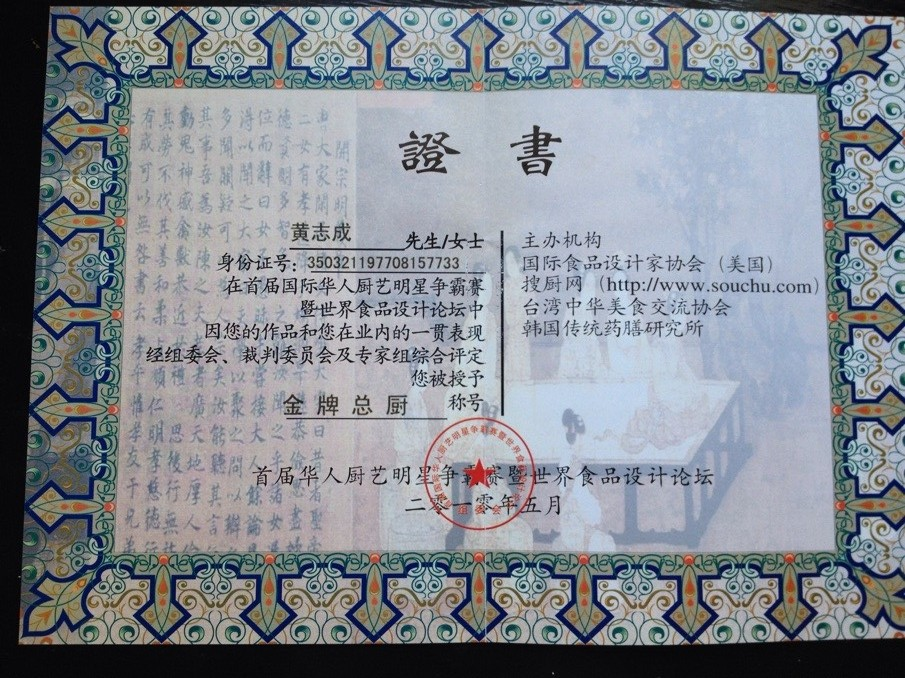

马明东
个人展示

荣誉一

荣誉三
个人简介
1977年8月出生 ，中国烹饪名师，中式烹调高级技师，福 建闽菜大师，2013年“福建省技术能手”获得者，现任莆田市烹饪协会副会长，莆田市友德餐饮集团厨政管理，华天金叶大酒店行政总监。
工作经历
1994年入行，1997—2000年莆田友德大酒店锅台，2000—2003年莆田友德海鲜楼任厨师长，2003—2006年莆田腾飞大酒店任厨师长，2006年至今，莆田市友德餐饮集团厨政管理，华天金叶大酒店行政总监。
综合信息
从事厨师行业19年以来，黄志成在烹饪技术方面，尽心尽力，勇于创新，在创新的同时，突出莆田的特色——南日鲍，把特色与烹饪结合起来，更好的展现了莆田名菜——“南日鲍鱼番鸭捞米粉“。
新奇的想法与创新的意识，促使了他对厨师行业的热情与喜爱，增强了自己的精湛厨艺。2009年11月，热爱从厨事业的他第一次参加了第四届福建省烹饪技能竟赛中荣获了‘’热菜组银奖‘’，幷与同年授任为莆田市烹饪协会副会长。2010年3月，参加第三届全国饭店业职业技能赛｛福州赛区｝中荣获金奖；2010年5月在参加首届国际华人厨艺明星争霸赛中获得‘’世界华人烹饪大赛金奖‘’，同时获得厨艺创新大赛‘’十佳金牌菜‘’，幷授予‘’金牌总厨‘’荣誉称号。
功夫不负有心人，一份耕耘，一份收获，2011年8月，在福建首届大金湖晏清杯，淡水鱼烹饪邀请赛中，获得金奖，其中制作的“鸿运当关”菜被誉为福建名菜；11月经福建省烹饪协会评定任命他为“福建名菜名师”；2012年6月参加了第五届“绿进杯”烹饪技能竞赛热爱项目中成绩优异，幷荣获金奖，其中“金汤竹荪炖辽参”被授予为福建名菜；与此同时，经福建省烹饪协会认定幷授予他为“福建名菜大师”荣誉的光荣称号。2013年1月经中国烹饪协会认定，授誉他为“中国烹饪名师”；同年3月经福建人力资源和社会保障厅评定授予“福建省技术能手”光荣称号。
作为一个有创新意识的行政总监、厨政管理、厨师长、能够把自己的创新与餐饮企业有机结合起来，他用自己的创新为餐饮行业增添了一副诱人的画卷。